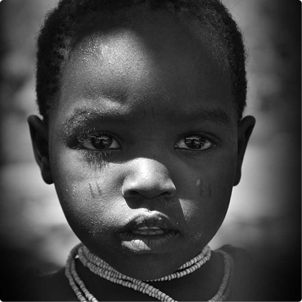

Conectando quem doa com quem precisa.
Junte-se à nossa rede de solidariedade. Reduza o desperdício e combata a insegurança alimentar na sua cidade de forma simples, segura e transparente.
Quero DoarA Fome é Real.
A Solução Também.
A insegurança alimentar é um problema social crescente, que afeta milhões de pessoas em situação de vulnerabilidade em todo o país. Por outro lado, diversas instituições, ONGs e projetos sociais atuam na coleta e distribuição de alimentos, mas muitas vezes encontram dificuldades em acessar doadores de forma eficiente. Nossa plataforma nasceu para ser essa ponte.
Saiba maisNosso Impacto em Números

+1250
Refeições Doadas

+120
Doadores Cadastrados

+10
Cidades Atendidas
Simples, Rápido e Seguro
Seja você um doador individual (pessoa física) com o desejo de contribuir regularmente, uma empresa buscando exercer sua responsabilidade social corporativa, ou uma instituição que precisa de apoio para levar esperança adiante, nosso processo de parceria é desenhado para ser totalmente acessível e descomplicado. O cadastro é simples e leva poucos minutos, permitindo que você comece a fazer a diferença imediatamente, sem burocracia. Priorizamos a sua tranquilidade: todas as suas informações e transações são tratadas com a máxima segurança e transparência. Não adie o impacto positivo que você pode gerar. Clique, cadastre-se e venha nutrir a esperança conosco.
Doar Agora